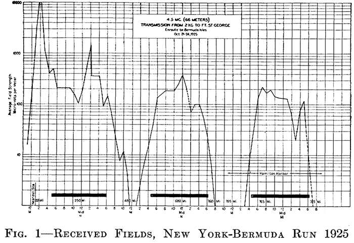

The callsign was operated by four entities, the DeForest Radio Telephone and Telegraph Company out of New York City, Western Electric / Bell Labs out of Deal, NJ, Amateur Radio operator Robert "Bob" Neal of Bergen, NY, and then Thomas W. Calhoun of Rutherford, NJ.
In the middle of the 20th century, a broadcast station known as "2XG" operated out of New Zealand, unrelated to this callsign.
The first iteration of the call existed as "2XG" from 1915 until 1924, first as "Highbridge Station" out of 1391 Sedgwick Avenue in the Bronx, New York City, licensed to the DeForest Radio Telephone and Telegraph Company. It has its own Wikipedia article: https://en.wikipedia.org/wiki/Radio_2XG, but was notably famous for being the first vacuum-tube powered station station to regularly broadcast phone news and entertainment on a consistent schedule. It operated on 375kHz with 125 watts. It went silent from 1917-1919 during World War 1, then resumed programming until the early 20's, when 2XG's transmitter was confiscated by district Radio Inspector Arthur Batcheller for an unauthorized relocation from the Bronx to Manhattan. The equipment was recovered and DeForest used it to establish 6XJ in San Francisco, and then resumed operation of 2XG from World's Tower Building in New York City in 1921, using a "type OT-201" 1kW transmitter at a wavelength of 1650 meters.
In the Radio Service Bulletin of July 1, 1924, the callsign was deleted.
Later that year, in the Radio Service Bulletin of December 1, 1924, the callsign "2XG" was added, located in "Ocean Beach, NJ" and licensed to "Western Electric Co., 463 West Street, New York, NY." In the Radio Service Bulletin of February 2, 1925, the operator and controller was changed to "Bell Telephone Laboratories." Its purpose was primarily to perform Land-To-Sea radio experiments to test propagation characteristics and ship-to-shore / transatlantic telephone feasibility. At this time, it was capable of 15kW unmodulated carrier with 60kW peak output. Below is an image of the 2XG transmitter in 1925:

In October of 1925, ships sailing from New York to Bermuda measured the recieved strength of 2XG's 66-meter signal along their journey. They remarked poor / no reception during the day that improved with transmissions at 33-meters. Below is a chart from the July of 1930 edition of The Bell System Technical Journal:

In February 1927, S. Williamson of Meersbrook, Sheffield, England, copied a transatlantic broadcast of 2XG.
In 1928, it was reported as operating on 32 meters.
In the June 1937 edition of "Radio News and Short Wave Radio", W2XG was reported as operating with 100w at 41,000kHz out of New York as an experimental station.
Post-war activation of W2XG is unknown.
Robert "Bob" Neal was probably the first modern amateur holder of the callsign, as 1x2's with X's in their suffix were released to the public in 1977. He appears in a Winter 1978 callbook with this callsign.
In August of 2018, I recieved an unsolicited email from K2DMG, who had this to say about Bob:
I thought I'd email you telling you a little bit about the man who was formally known as W2XG.
Bob SK'ed on April 21, 2012 and the callsign expired in October of 2016.The FCC ULS notes his death was reported and the callsign was cancelled on 1/4/2018 and became available on 2/5/2018.
I became licensed in 2015 as KD2JWO and took on the vanity W2THO shortly thereafter.
Twelve people applied for W2XG on 2/5/2018. It was assigned to me on 2/23/2018, under my former legal name, which I legally changed later that year.